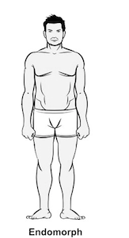

האנדומורף
לאנדומורפים יש בד"כ מבנה עצמות גדול יותר מאשר שאר סוגי הגוף
.גברים ונשים מסוג זה נוטים להיות מבנה פנים עגלגל יותר, ירכיים ומותניים רחבים יותר וגפיים שנוטים להיות קצרים ומחודדים יותר
,דבר הנותן להם מראה גוף גוצי ויציב יותר
.לרוב האנדומורפים יש כפות ידיים ורגליים קטנות יותר, וקו מותניים גבוה יחסית. תכונות נוספות של האנדומורף הן עור חלק ושיער
.ראשו של האנדומורף הוא גדול ועגול יותר, ובעל פנים רחבות
.מבנה הגוף של האנדומורף הקיצוני יותר נוטה להיות עגול ובעל קווי מתאר רכים, ונראה כי מסה רבה יותר מרוכזת באזור פלג הגוף המרכזי, האזור האבדומינלי.
סוג הגוף האנדומורפי מכונה "דמוי תפוח" לאלה המעלים מסת שריר ושומן בחלקו העליון של הטורסו (חלקו המרכזי של הגוף) ו"דמוי אגס" לאלה המעלים את מרב
המסה בחלקו התחתון של הטורסו
.סוג הגוף הזה מזוהה ע"י כמות מוגברת של שומן מאוחסן עקב כמות מוגברת של תאי שומן והגברה בכמות התאים המוקצה למערכת העיכול
.למזלו של האנדומורף, לסוג זה גם קל יותר לבנות מסת שריר ומסת גוף רזה.
אסטרטגיית אימונים מתאימה לאנדומורפים
אנדומורפים רבים חושקים במראה רזה, דק ומוגדר יותר. בנוסף להקפדה על דיאטה נכונה, המפתח הוא פעילות אירובית לפיתוח סיבולת לב- .אימונים שכאלה הם הכרחיים לשמירה על המטבוליזם ושריפת קלוריות ברמה גבוהה יותר .יש להימנע מאימונים שעלולים לפגוע במפרקים ולהתמקד ברכיבה על אופניים, מכשירי אימון אליפטיים, שחייה, סקי וטיפוס מדרגות. כדאי לבצע 30-60 דקות של אימון אירובי 3-6 פעמים בשבוע. כדי להוסיף מסת שריר, כדאי לבצע אימון משקולות כלל גופני המורכב משני סטים של אימוני משקולות לכל חלק גוף .הכמות המומלצת היא 10-15 חזרות לכל סט במשקל בינוני עד קל .בכדי לשפר את הסימטריה בגוף, כדי להתמקד באימונים לפלג הגוף העליון